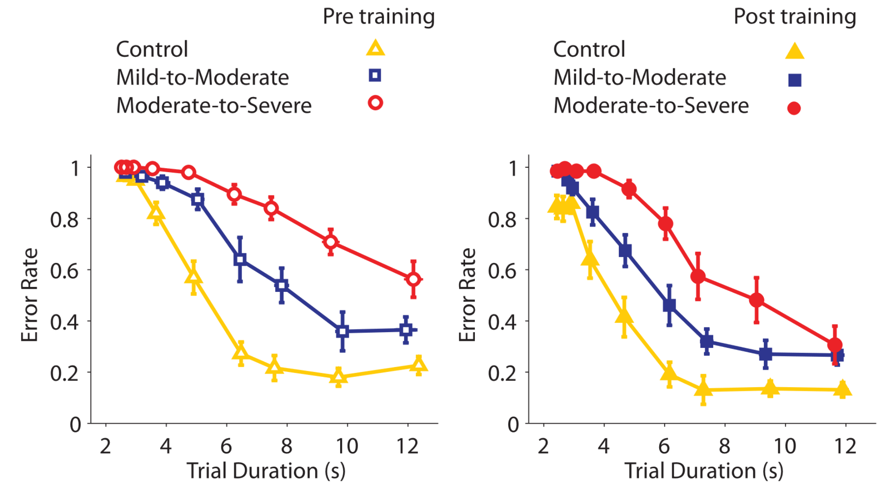
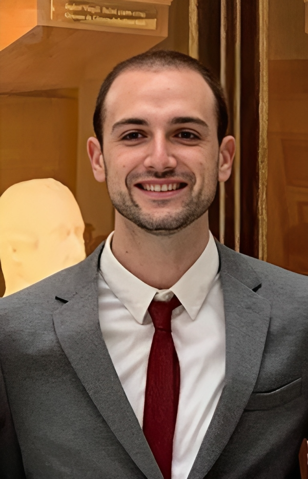
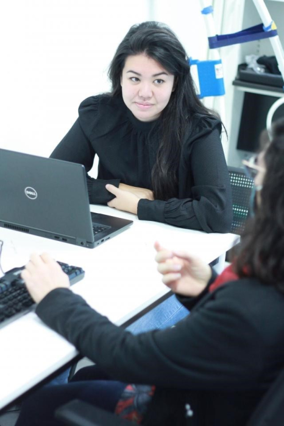

Research

Motor Skill Learninig
Robert studied human neuromotor control at the University of Birmingham, UK, completing his PhD with Martin Edwards, followed by a Postdoctoral position with Chris Miall, which included including a visiting scholarship in Simon Eickhoff’s laboratory in Julich, Germany). Johns Hopkins, USA (Pablo Celnik’s Human Brain Physiology and Stimulation lab, and John Krakauer/Adrian Haith’s Brain, Learning, Animation, and Movement lab), and KU Leuven, Belgium (In Stephan Swinnen’s Movement Control and Neuroplasticity Group). In 2019 he received a dual appointment at the Institute of Neuroscience and the Faculty of Motor Sciences at UC Louvain, Belgium, where he founded the Brain, Action, and Skill Laboratory.

Marcos Moreno-Verdú
Marcos studied physiotherapy at the Complutense University of Madrid, Spain, and specialized in neurological rehabilitation through a Masters degree at the Rey Juan Carlos University of Madrid. He completed his PhD at Complutense University of Madrid in 2021 in the field of motor imagery and Parkinson’s disease. He also studied a Masters degree in Neurosciences while finishing his PhD. From 2017 to 2022, Marcos has been working part time as researcher and neurological physiotherapist, with a main focus on people with Parkinson’s and stroke. He has clinical experience in advanced neurorehabilitation techniques, including non-invasive neuromodulation (tDCS, TMS, EEG-based neurofeedback), intensive rehabilitation approaches to upper limb and gait motor recovery, robot-assisted therapy and functional electrical stimulation. From 2022-2023, Marcos was part of the Brain Injury and Movement Disorders Neurorehabilitation Group (GINDAT) at Francisco de Vitoria University, as full-time postdoctoral researcher.

Charlène Truong
Charlène studied Science and Techniques of Physical Activity and Sport, specializing in Adapted Physical Activity and Health, at the Université de Bourgogne (France). In 2023, she completed her PhD under the supervision of Pr. Charalambos Papaxanthis and Dr. Célia Ruffino in the Cognition, Action, Sensorimotor Plasticity Laboratory (CAPS) in Dijon (France). She focused on the influence of motor learning timing on the acquisition and consolidation of motor skills. Then, she pursued a postdoctoral position, where she investigated neuromodulation mechanisms following motor learning, and examined the effects of different frontal stimulation sites on the inhibition of the primary motor cortex using transcranial magnetic stimulation (TMS).